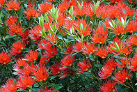

|  |
Rata TreeThe Rata belong in the myrtle family of trees.Northern rata (Metrosideros robusta) usually begins life as a plant perched on a host tree. Its roots grow down to the ground, finally enclosing the host tree and producing a huge tree up to 25 metres high with a trunk of 2.5 metres thick. Rata trees have glossy dark green leaves and trunks that are often gnarled and twisted. However they are best known for their brilliant red flowers that appear in profusion from November to January, depending on location, and can be seen from some distance away. Since brushtail possum were introduced from Australia in the nineteenth century, they have spread throughout New Zealand. As possum populations have built up in forest areas, there has been a corresponding loss of rata and some other forest species. Possums eat a wide range of plants, but show strong preferences for some species like the rata and are also known to prey on native wildlife such as kokako chicks.Rata trees cannot tolerate browsing. A mature tree can be killed in three years with intensive browsing and even young trees, although they can survive for longer, will eventually die if browsed regularly. When the browsed trees eventually die back, the canopy, or top layer of the forest, is then opened up. Once the canopy is open, the trees are exposed to storms, insects and diseases and will suffer further. Because possum numbers have increased dramatically in recent years, the threat to rata and other species is even greater. Possum control costs have also increased significantly, compounding the problem. Because of the increase in possum numbers and the cost of controlling them, control efforts have to concentrate on the forest areas that are considered most at risk. |